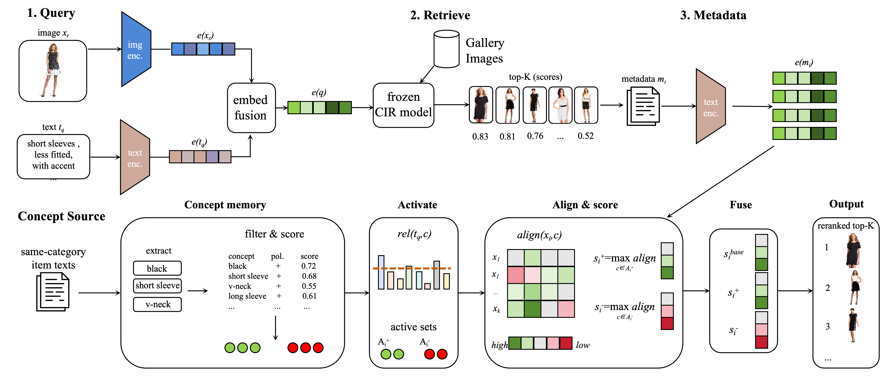
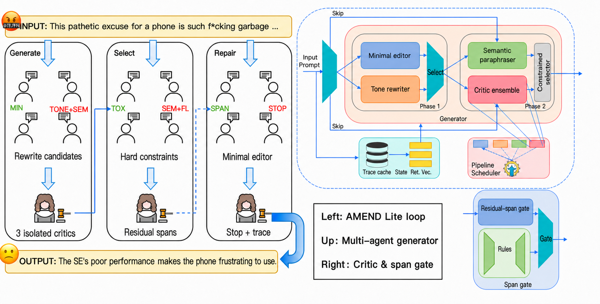

教育背景
东南大学（985，211，双一流）
软件工程 · 硕士
2027.09 –
苏州大学（211，双一流）
软件工程（GPA 前 6%）· 本科
2023.09 – 2027.06
实习经历
蚂蚁集团
多模态大模型后训练（LLM Post-Training / RL）
2026.09 – 2026.11
- 参与多模态 UI 推理模型对齐，基于
verl搭建后训练与实验链路。在 Qwen3 系列 32B 教师模型和 4B 学生模型上开展定位感知 SFT、GRPO 与OPD；结合 reverse-KL、JSD 等损失函数，在学生模型采样轨迹上对齐输出行为与因果注意力；参与提出注意力蒸馏等UI特化OPD改进方案。 - 参与 4B／32B 模型的多卡训练、实验复现和结果分析，在 16×A100 环境完成训练与 benchmark 评测；围绕 SFT、RL、OPD 和注意力蒸馏开展消融实验，量化各阶段对模型性能的贡献。
- 负责 UI 数据集清洗、评测集整理和模型评测。4B 模型在该数据集上提升 33.4 个百分点，超过未经后训练的 32B 模型（80.2%）；引入注意力蒸馏后，较原版 OPD 进一步在 OSWorld-G、UI-Vision 上提升9.1个百分点和11百分点。
南京大学推理与学习（R&L）联合实验室（万维艾斯）
算法实习
2025.07 – 2025.08
- 参与某研究所 127 个机器学习算法集成平台建设，在 NVIDIA 环境复现传统机器学习算法，并在 Ascend 910 上适配、修改并重新训练 FairMOT 等视觉模型。
- 参与江苏路政道路异物识别系统数据链路开发，处理约 7 万张道路场景图片，完成视频关键帧抽取、YOLO 自动预标注与数据整理。
科研与项目经历
-
PRICAI 2026
Wang, T., & Wu, T. (2026). AutoConcept: Training-Free Concept-Guided Reranking for Metadata-Available Composed Image Retrieval. PRICAI 2026.提出面向组合图像检索（CIR）的 training-free concept-guided reranking 方法，构建显式正负偏好 concept memory，通过视觉特征过滤、相关性门控与自适应插值实现偏好感知重排序。arXiv:2609.01456。

AutoConcept：从组合查询检索、metadata concept memory 到自适应融合重排序的完整流程。 -
2026
Wang, T. (2026). AMEND: Constraint-Guided Multi-Agent Text Detoxification with Isolated Critics. Technical report.设计面向文本安全对齐的 multi-agent / multi-critic 降毒框架，通过 toxicity、semantic preservation、fluency、safety 等 critic 对候选响应进行闭环反馈与 reranking，在降低有害表达的同时约束语义保持与生成质量。

AMEND：角色化候选生成、隔离 critics、硬约束选择与 residual-span 定向修复流程。
专业技能
LLM Post-Training：拥有多模态大模型后训练实践，熟悉 SFT、GRPO、OPD、reward-based training，具备 verl、多卡训练、rollout、benchmark evaluation 与 controlled ablation 经验。
基础与编程：Python、C/C++、PyTorch；具备 VLM、GUI grounding、模型迁移与视觉数据 pipeline 实践；完成 CS336、CS224N 等课程学习，具备 Transformer、LLM Pre-training / Post-Training 与 NLP 基础；NOIP 国一，CSP 370，CET-6 659，Github 100+ Stars & 100+ Followers。
-
PRICAI 2026
AutoConcept: Training-Free Concept-Guided Reranking for Metadata-Available Composed Image Retrieval提出显式概念记忆机制用于训练无关的组合图像检索重排序，在 FashionIQ 上显著提升 R@10 指标（WeiMoCIR 0.1125→0.1379，LinCIR 0.2605→0.3009），同时提供可解释的概念激活与自适应插值机制。
-
In Progress
VICER: VIsion-Concept Enhanced Retrieval多模态零样本生成系统，通过反向概念匹配识别长尾/个性化概念，融合图像、文本与指令嵌入进行 CIR 多模态对齐，引入残差回传保留视觉细节。在自建长尾零样本数据集上优于基线方法。
-
Under Review
Critic-Guided Multi-Agent Text Detoxification for Fine-Grained Harm Reduction [1]多智能体文本降毒框架，通过多重 critic 闭环反馈排序优化生成。在 UCB 数据集上 MoAGAN R² 提升至 0.6848（基线 0.4987），Bilibili-Xiaoheiwu 检测准确率 0.7386，优于 prompt 或 RoBERTa。
-
省刊
在线评测系统中的边缘计算应用研究将边缘计算用于在线评测系统，通过客户端分布式评测、K-means 异常检测与代码交叉验证优化。并发超过 3 时分布式评测耗时优势明显，异常检测精确率 0.66、召回率 0.67。
Honors & Awards
学科竞赛
- 2024.08 中国机器人及人工智能大赛国家级一等奖
- 2024.04 团体程序设计天梯赛 (GPLT)国家级三等奖
- 2024.04 蓝桥杯全国软件和信息技术专业人才大赛国家级优秀奖
- 2024.04 蓝桥杯软件和信息技术专业人才大赛江苏赛区省一等奖
荣誉奖项
- 2024-2025 苏州大学学习优秀奖学金 特等奖
- 2023-2024 苏州大学创新创业奖学金 特等奖
- 2023-2024 苏州大学学习优秀奖学金 一等奖
- 2024-2025 苏州大学综合奖学金
- 2024-2025 苏州大学专项奖学金 · 精神文明专项奖
- 2024 苏州大学创新创业创意大赛 三等奖